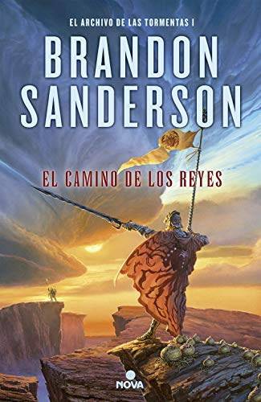

Los días en que los Heraldos nos abandonaron y los Caballeros Radiantes se giraron en nuestra contra. Un tiempo en que aún había magia en el mundo y honor en el corazón de los hombres. El mundo fue nuestro, pero lo perdimos. Probablemente no hay nada más estimulante para las almas de los hombres que la victoria. ¿O tal vez fue la victoria una ilusión durante todo ese tiempo? ¿Comprendieron nuestros enemigos que cuanto más duramente luchaban, más resistíamos nosotros? Quizá vieron que el fuego y el martillo tan solo producían mejores espadas. Pero ignoraron el acero durante el tiempo suficiente para oxidarse. Hay cuatro personas a las que observamos. La primera es el médico, quien dejó de curar para convertirse en soldado durante la guerra más brutal de nuestro tiempo. La segunda es el asesino, un homicida que llora siempre que mata. La tercera es la mentirosa, una joven que viste un manto de erudita sobre un corazón de ladrona. Por último está el alto príncipe, un guerrero que mira al pasado mientras languidece su sed de guerra. El mundo puede cambiar. La potenciación y el uso de las esquirlas pueden aparecer de nuevo, la magia de los días pasados puede volver a ser nuestra. Esas cuatro personas son la clave. Una de ellas nos redimirá. Y una de ellas nos destruirá
El Camino de los Reyes
Los días en que los Heraldos nos abandonaron y los Caballeros Radiantes se giraron en nuestra contra. Un tiempo en que aún había magia en el mundo y honor en el corazón de los hombres. El mundo fue nuestro, pero lo perdimos. Probablemente no hay nada más estimulante para las almas de los hombres que la victoria. ¿O tal vez fue la victoria una ilusión durante todo ese tiempo? ¿Comprendieron nuestros enemigos que cuanto más duramente luchaban, más resistíamos nosotros? Quizá vieron que el fuego y el martillo tan solo producían mejores espadas. Pero ignoraron el acero durante el tiempo suficiente para oxidarse. Hay cuatro personas a las que observamos. La primera es el médico, quien dejó de curar para convertirse en soldado durante la guerra más brutal de nuestro tiempo. La segunda es el asesino, un homicida que llora siempre que mata. La tercera es la mentirosa, una joven que viste un manto de erudita sobre un corazón de ladrona. Por último está el alto príncipe, un guerrero que mira al pasado mientras languidece su sed de guerra. El mundo puede cambiar. La potenciación y el uso de las esquirlas pueden aparecer de nuevo, la magia de los días pasados puede volver a ser nuestra. Esas cuatro personas son la clave. Una de ellas nos redimirá. Y una de ellas nos destruirá

Ciudad de Jade
El jade es el alma de la isla de Kekon. Durante siglos, los kekoneses lo han extraído de las entrañas de la tierra, han comerciado con él, lo han robado y han matado por él. Honorables guerreros huesos verdes como la familia Kaul lo han empleado para aumentar sus habilidades mágicas y defender la isla de las invasiones extranjeras. Ahora la guerra ha terminado y una nueva generación de la familia Kaul compite por el control de la floreciente capital de Kekon. Solo les preocupa proteger a los suyos, monopolizar el mercado de jade y defender los distritos que se hallan bajo su protección. En estos tiempos de cambio no hay lugar para las antiguas tradiciones. Cuando aparece en las calles una nueva y poderosa droga que permite a cualquiera (incluso a los extranjeros) usar el jade, la creciente tensión entre la familia Kaul y sus rivales, la familia Ayt, estalla y transforma la ciudad en un campo de batalla. El resultado de esta guerra de clanes decidirá el destino de todos los huesos verdes y el futuro de la propia Kekon.

La Sombra de los Dioses
Ha pasado un siglo desde que los dioses lucharon y se extinguieron. Ahora solo quedan sus huesos, que prometen un gran poder a aquellos lo suficientemente valientes como para buscarlos. Mientras los susurros de guerra resuenan en la tierra de Vigrið, el destino sigue los pasos de tres guerreros: una cazadora en una búsqueda peligrosa, una mujer noble que busca la fama en la batalla y un esclavo que busca venganza entre los mercenarios conocidos como los Hermanos de Sangre. Los tres darán forma al destino del mundo, ya que una vez más cae bajo la sombra de los dioses.